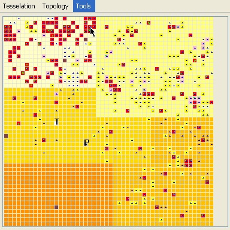

|
SimDrug
Exploring the complexity of the heroin drug use in Melbourne (Australia)
A. Dray and P. Perez
BackgroundSimDrug is a multi-agent system model, built with Cormas, as part of the Drug Policy Modeling Project, led by Turning Point, a specialist alcohol and drug organization based in Melbourne. The project aims at addressing a demand for new integrative approaches to support policy makers and practitioners who implement illicit drug policy in Australia. SimDrug focuses on the representation of dynamic relationships between law enforcement, treatment, harm reduction and prevention. Its design is based upon a real case-study: the heroin drought that struck the illicit drug market in Melbourne in 2000. The supply of heroin in Melbourne suffered a dramatic decline between late 2000 and early 2001, after a strong increase in heroin use and related harms in the late 1990s. This change in heroin supply led to a substantial decrease in overdoses. Field experts argue that the drought was actually shadowed by a dramatic increase in psycho stimulants, resulting in a fairly constant number of injecting drug. On the other hand, the heroin drought is held up by the Australian Government as an example of law enforcement (seizure, syndicates dismantlement) having a significant impact on the supply of drugs. Model description Time scaleOne time step is equivalent to a 24h-day in reality as injecting behaviors need accurate time scale. Each simulation is run over a 5-year period (1998 - 2002 dataset) to allow the model to be able to consistently reproduce pre-drought, crisis, and post-drought dynamics of the system. Spatial environment Social entities Model dynamics
Model code and documentationThe Cormas model -including the smalltalk code, a set of UML diagrams and a description of the variables- is available here. Reference Perez, P. and Dray, A. 2005. Monograph No. 11: SimDrug: Exploring the
complexity of heroin use in Melbourne. DPMP Monograph Series. Fitzroy:
Turning Point Alcohol and Drug Centre. For more information, contact the corresponding author
|